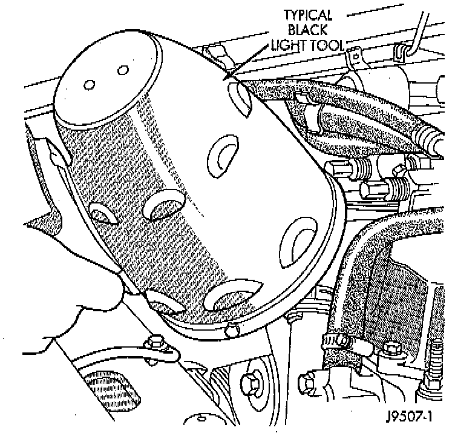

Ultraviolet Light Method

NOTE: A leak detection additive is available through the parts store that can be added to cooling system. The additive is highly visible under ultraviolet light (black light).
1. Pour one ounce of additive into cooling system.
2. Place heater control unit in HEAT position.
3. Start and operate engine until radiator upper hose is warm to touch. Aim the commercially available black light tool at components to be checked.
4. If leaks are present, black light will cause additive to glow a bright green color.
NOTE: The black light can be used in conjunction with a pressure tester to determine if any external leaks exist.